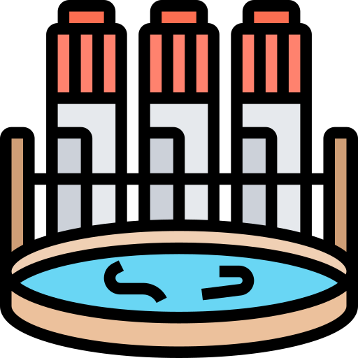
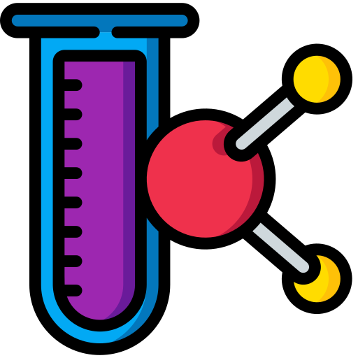
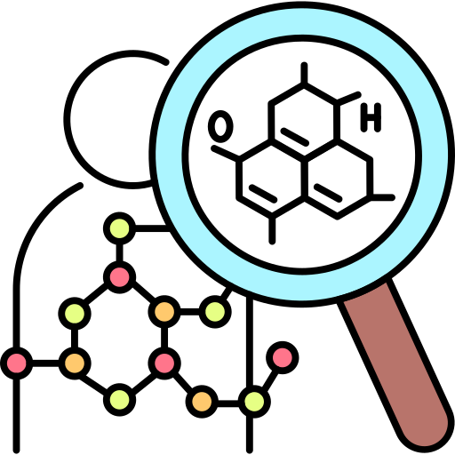
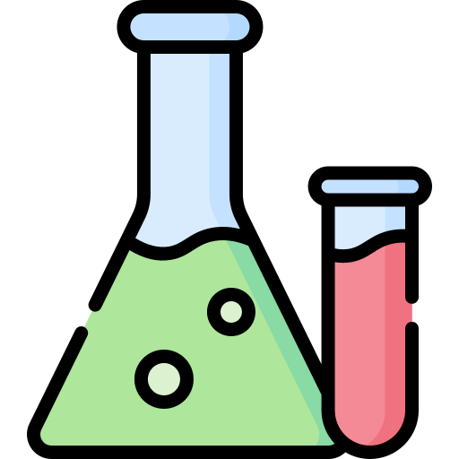

Oferta académica

Especialización en Bioquímica Clínica

Maestría en investigación Clínica Experimental en salud, campo Bioquímica Clínica

Doctorado en investigación Clínica Experimental en salud, campo Bioquímica Clínica

Maestría en Ciencias Bioquímicas

Maestría en Ingeniería Química